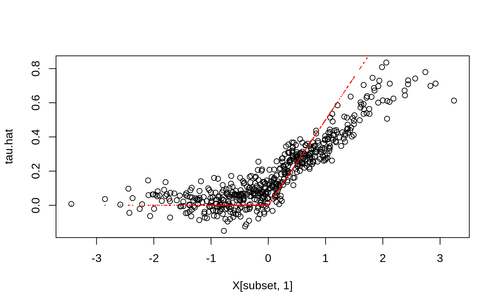

Trains a linear model forest that can be used to estimate \(h_k(x)\), k = 1..K at X = x in the the conditional linear model \(Y = c(x) + h_1(x)W_1 + ... + h_K(x)W_K\), where Y is a (potentially vector-valued) response and W a set of regressors.
lm_forest( X, Y, W, Y.hat = NULL, W.hat = NULL, num.trees = 2000, sample.weights = NULL, gradient.weights = NULL, clusters = NULL, equalize.cluster.weights = FALSE, sample.fraction = 0.5, mtry = min(ceiling(sqrt(ncol(X)) + 20), ncol(X)), min.node.size = 5, honesty = TRUE, honesty.fraction = 0.5, honesty.prune.leaves = TRUE, alpha = 0.05, imbalance.penalty = 0, stabilize.splits = FALSE, ci.group.size = 2, compute.oob.predictions = TRUE, num.threads = NULL, seed = runif(1, 0, .Machine$integer.max) )
| X | The covariates used in the regression. |
|---|---|
| Y | The outcome (must be a numeric vector or matrix [one column per outcome] with no NAs). Multiple outcomes should be on the same scale. |
| W | The conditional regressors (must be a vector or matrix with no NAs). |
| Y.hat | Estimates of the conditional means E[Y | Xi]. If Y.hat = NULL, these are estimated using a separate multi-task regression forest. Default is NULL. |
| W.hat | Estimates of the conditional means E[Wk | Xi]. If W.hat = NULL, these are estimated using a separate multi-task regression forest. Default is NULL. |
| num.trees | Number of trees grown in the forest. Note: Getting accurate confidence intervals generally requires more trees than getting accurate predictions. Default is 2000. |
| sample.weights | Weights given to each sample in estimation. If NULL, each observation receives the same weight. Default is NULL. |
| gradient.weights | Weights given to each coefficient h_k(x) when targeting heterogeneity in the estimates. These enter the GRF algorithm through the split criterion \(\Delta\): the k-th coordinate of this is \(\Delta_k\) * gradient.weights[k]. If NULL, each coefficient is given the same weight. Default is NULL. |
| clusters | Vector of integers or factors specifying which cluster each observation corresponds to. Default is NULL (ignored). |
| equalize.cluster.weights | If FALSE, each unit is given the same weight (so that bigger clusters get more weight). If TRUE, each cluster is given equal weight in the forest. In this case, during training, each tree uses the same number of observations from each drawn cluster: If the smallest cluster has K units, then when we sample a cluster during training, we only give a random K elements of the cluster to the tree-growing procedure. When estimating average treatment effects, each observation is given weight 1/cluster size, so that the total weight of each cluster is the same. Note that, if this argument is FALSE, sample weights may also be directly adjusted via the sample.weights argument. If this argument is TRUE, sample.weights must be set to NULL. Default is FALSE. |
| sample.fraction | Fraction of the data used to build each tree. Note: If honesty = TRUE, these subsamples will further be cut by a factor of honesty.fraction. Default is 0.5. |
| mtry | Number of variables tried for each split. Default is \(\sqrt p + 20\) where p is the number of variables. |
| min.node.size | A target for the minimum number of observations in each tree leaf. Note that nodes with size smaller than min.node.size can occur, as in the original randomForest package. Default is 5. |
| honesty | Whether to use honest splitting (i.e., sub-sample splitting). Default is TRUE. For a detailed description of honesty, honesty.fraction, honesty.prune.leaves, and recommendations for parameter tuning, see the grf algorithm reference. |
| honesty.fraction | The fraction of data that will be used for determining splits if honesty = TRUE. Corresponds to set J1 in the notation of the paper. Default is 0.5 (i.e. half of the data is used for determining splits). |
| honesty.prune.leaves | If TRUE, prunes the estimation sample tree such that no leaves are empty. If FALSE, keep the same tree as determined in the splits sample (if an empty leave is encountered, that tree is skipped and does not contribute to the estimate). Setting this to FALSE may improve performance on small/marginally powered data, but requires more trees (note: tuning does not adjust the number of trees). Only applies if honesty is enabled. Default is TRUE. |
| alpha | A tuning parameter that controls the maximum imbalance of a split. Default is 0.05. |
| imbalance.penalty | A tuning parameter that controls how harshly imbalanced splits are penalized. Default is 0. |
| stabilize.splits | Whether or not Wk should be taken into account when determining the imbalance of a split. It is an exact extension of the single-arm constraints (detailed in the causal forest algorithm reference) to multiple arms, where the constraints apply to each regressor Wk. Default is FALSE. |
| ci.group.size | The forest will grow ci.group.size trees on each subsample. In order to provide confidence intervals, ci.group.size must be at least 2. Default is 2. (Confidence intervals are currently only supported for univariate outcomes Y). |
| compute.oob.predictions | Whether OOB predictions on training set should be precomputed. Default is TRUE. |
| num.threads | Number of threads used in training. By default, the number of threads is set to the maximum hardware concurrency. |
| seed | The seed of the C++ random number generator. |
A trained lm forest object.
Athey, Susan, Julie Tibshirani, and Stefan Wager. "Generalized Random Forests". Annals of Statistics, 47(2), 2019.
Zeileis, Achim, Torsten Hothorn, and Kurt Hornik. "Model-based Recursive Partitioning." Journal of Computational and Graphical Statistics 17(2), 2008.
# \donttest{ if (require("rdd", quietly = TRUE)) { # Train a LM Forest to estimate CATEs in a regression discontinuity design. # Simulate a simple example with a heterogeneous jump in the CEF. n <- 2000 p <- 5 X <- matrix(rnorm(n * p), n, p) Z <- runif(n, -4, 4) cutoff <- 0 W <- as.numeric(Z >= cutoff) tau <- pmax(0.5 * X[, 1], 0) Y <- tau * W + 1 / (1 + exp(2 * Z)) + 0.2 * rnorm(n) # Compute the Imbens-Kalyanaraman MSE-optimal bandwidth for a local linear regression. bandwidth <- IKbandwidth(Z, Y, cutoff) # Compute kernel weights for a triangular kernel. sample.weights <- kernelwts(Z, cutoff, bandwidth, "triangular") # Alternatively, specify bandwith and triangular kernel weights without using the `rdd` package. # bandwidth <- # user can hand-specify this. # dist <- abs((Z - cutoff) / bandwidth) # sample.weights <- (1 - dist) * (dist <= 1) / bandwidth # Estimate a local linear regression with the running variable Z conditional on covariates X = x: # Y = c(x) + tau(x) W + b(x) Z. # Specify gradient.weights = c(1, 0) to target heterogeneity in the RDD coefficient tau(x). # Also, fit forest on subset with non-zero weights for faster estimation. subset <- sample.weights > 0 lmf <- lm_forest(X[subset, ], Y[subset], cbind(W, Z)[subset, ], sample.weights = sample.weights[subset], gradient.weights = c(1, 0)) tau.hat <- predict(lmf)$predictions[, 1, ] # Plot estimated tau(x) vs simulated ground truth. plot(X[subset, 1], tau.hat) points(X[subset, 1], tau[subset], col = "red", cex = 0.1) }#> #>#> #> #># }